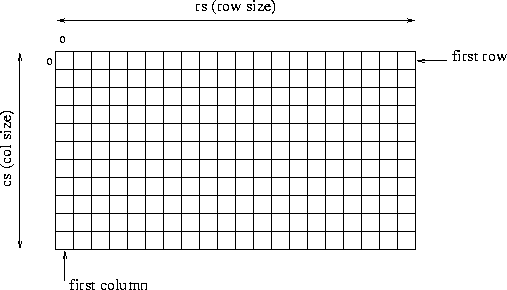

Cet environnement a pour but de faciliter le développement de vos premiers opérateurs de traitement d'image. Il inclut notamment des fonctions d'entrée/sortie permettant de lire et d'écrire des fichiers images en niveaux de gris au format pgm (Portable Gray Map, un format standard). Il propose également une structure de données permettant la manipulation des pixels de l'image, une fois celle-ci chargée en mémoire.
Pour la visualisation des images, n'importe quel outil standard peut être utilisé. Nous recommandons particulièrement xv, qui permet en outre la conversion de formats de fichiers.
Une image est vue comme un tableau rectangulaire à deux dimensions de pixels ou picture elements, l'intensité de chaque pixel (son niveau de gris) est codé sur un octet (unsigned char - valeur entre 0 et 255).

En mémoire centrale, une image est stockée dans une structure de type xvimage:
struct xvimage {
char *name;
uint32_t row_size; /* Size of a row (number of columns) */
uint32_t col_size; /* Size of a column (number of rows) */
uint32_t depth_size; /* Number of planes (for 3d images) */
uint32_t time_size; /* Number of (2d or 3d) images */
uint32_t num_data_bands; /* Number of bands per data pixel,
or number of bands per image, or
dimension of vector data, or
number of elements in a vector */
uint32_t data_storage_type; /* storage type for disk data */
double xdim, ydim, zdim; /* voxel dimensions in real world */
void * image_data; /* pointer on raw data */
};
Les pixels sont rangés dans ce tableau dans l'ordre suivant:
pixel 0 de la ligne 1 pixel 1 de la ligne 1 ... pixel row_size-1 de la ligne 1 pixel 0 de la ligne 2 ...
Il faut d'abord récuperer l'adresse du tableau contenant les pixels :
ptrimage = (unsigned char *)(image->image_data);
Puis, pour accéder au ième pixel de la jème ligne :
ptrimage[j * rs + i]
Voici pour récapituler une fonction laddconst qui réhausse d'une valeur constante (sauf en cas de dépassement de la valeur 255) le niveau de gris de tous les pixels d'une image (source : src/lib/laddconst.c, prototypes : include/laddconst.h):
/* ajoute une constante a une image - seuil si depassement */
#include <stdio.h>
#include <stdlib.h>
#include <laddconst.h>
#include <mcimage.h>
/* ==================================== */
int laddconst(struct xvimage * image, /* entree: l'image a traiter */
/* sortie: l'image modifiee */
int constante /* entree: la valeur a ajouter */
)
/* ==================================== */
{
int indexpixel;
unsigned char *ptrimage;
unsigned long newval;
int rs, cs, N;
rs = image->row_size;
cs = image->col_size;
N = rs * cs;
/* ---------------------------------------------------------- */
/* calcul du resultat */
/* ---------------------------------------------------------- */
ptrimage = (unsigned char *)(image->image_data);
for (indexpixel = 0; indexpixel < N; indexpixel++)
{
newval = (int)(ptrimage[indexpixel]) + constante;
if (newval < NDG_MIN) newval = NDG_MIN;
if (newval > NDG_MAX) newval = NDG_MAX;
ptrimage[indexpixel] = (unsigned char)newval;
}
return 1; /* tout s'est bien passe */
}
Il faut bien sûr un programme principal qui appelle cette fonction. Le rôle de ce programme principal peut se limiter à lire une image dans un fichier, appeler la fonction laddconst, et stocker le résultat dans un autre fichier.
La lecture d'une image dans un fichier au format pgm se fait par un appel à la fonction readimage :
struct xvimage * image; char *filename; ... image = readimage(filename);
Cette fonction retourne un pointeur NULL si la lecture ne s'est pas déroulée normalement. La fonction readimage est définie dans src/lib/mcimage.c (prototype dans include/mcimage.h).
L'écriture d'une image dans un fichier au format pgm se fait par un appel à la fonction writeimage :
struct xvimage * image; char *filename; ... writeimage(image, filename);
La fonction writeimage est définie dans src/lib/mcimage.c (prototype dans include/mcimage.h).
Lors d'un appel à readimage, une structure xvimage est automatiquement allouée. Pour allouer une structure xvimage sans appeler readimage, on peut utiliser la fonction allocimage :
struct xvimage * image; int rs, cs; ... image = allocimage(NULL, rs, cs, 1, VFF_TYP_1_BYTE);
Pour libérer la place allouée, on peut utiliser la fonction freeimage :
freeimage(image);
Les fonctions allocimage et freeimage sont définies dans src/lib/mcimage.c (prototypes dans include/mcimage.h).
Voici pour terminer un programme principal qui permet d'appeler la fonction laddconst (source : src/com/addconst.c) :
/* appel de laddconst */
#include <stdio.h>
#include <mcimage.h>
#include <laddconst.h>
/* =============================================================== */
int main(int argc, char **argv)
/* =============================================================== */
{
struct xvimage * image1;
int constante;
if (argc != 4)
{
fprintf(stderr, "usage: %s in1.pgm constante out.pgm \n", argv[0]);
exit(0);
}
image1 = readimage(argv[1]);
if (image1 == NULL)
{
fprintf(stderr, "addconst: readimage failed\n");
exit(0);
}
constante = atoi(argv[2]);
if (! laddconst(image1, constante))
{
fprintf(stderr, "addconst: function laddconst failed\n");
exit(0);
}
writeimage(image1, argv[3]);
freeimage(image1);
} /* main */
doc : documentation
include : les fichiers entete (.h)
obj : les fichiers objet (.o)
bin : les executables
src/com : les sources des programmes destines a etre lances du shell
src/lib : les sources des fonctions de base (mcimage) et de traitement